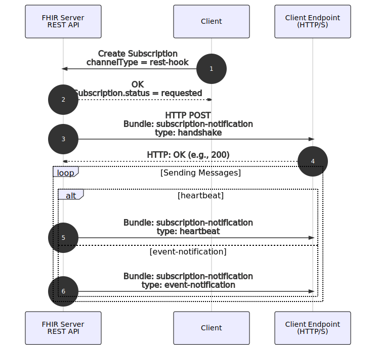
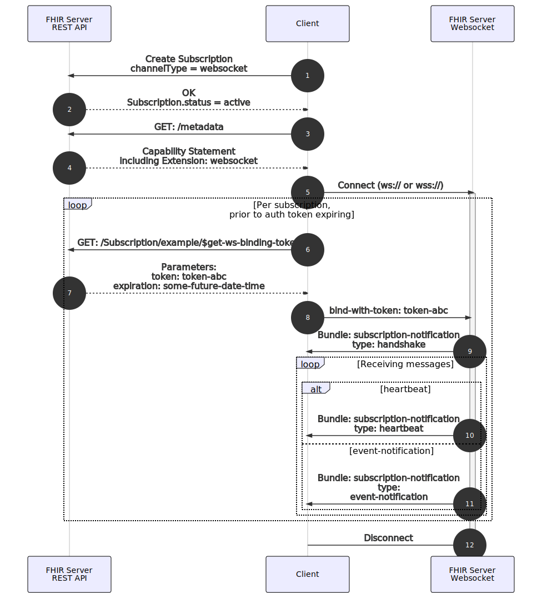
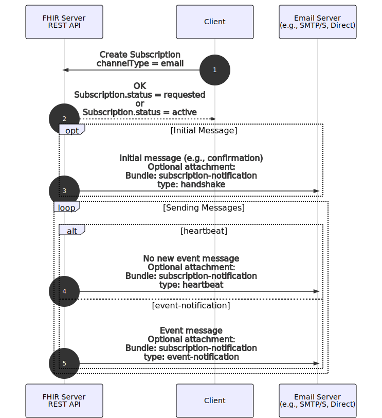

Subscriptions R5 Backport
0.1.0 - ballot
Subscriptions R5 Backport
0.1.0 - ballot
Subscriptions R5 Backport - Local Development build (v0.1.0). See the Directory of published versions
In FHIR R5, there are four channel types which were common enough to be defined in the specification (additional channel types can be defined externally). In this Implementation Guide, we define those same channel types; additional channel definitions may be defined by other implementations or Implementation Guides.
Both the FHIR specification and this guide rely on the definitions of a reduced set of channel types. While the specification allows for additional channel type definitions, the included set attempts to cover the majority of common use cases. Below is some guidance for implementers to consider when selecting a channel type.
The FHIR standard makes extensive use of the RESTful model. Given the popularity of REST and widespread adoption, most implementers should assume REST-hook as the ‘default’ channel type. In general, REST-based systems are well-supported (e.g., tooling, infrastructure, documentation, etc.), and will present the lowest bar for implementation.
Websockets are unique in the pre-defined channel types in being the only channel that does not require the client to have an endpoint. Due to this property, the websocket channel is very useful for clients where creating an endpoint would be difficult or impossible (e.g., mobile clients, web-based clients, etc.).
The Email channel is the only channel that could contest REST in non-FHIR implementations. That said, Email communication is often high-latency and is typically used for communication to individuals - not applications. Email channels are particularly useful in the context of these non-application use cases, such as public health notifications. For example, if a public health agency does not have the ability or desire to build a custom RESTful solution (e.g., creating and maintaining an endpoint to receive notifications, as well as software to consume those notifications), it is straightforward to map notifications to email addresses or aliases.
FHIR Messaging is a mechanism defined to allow for non-RESTful communication between FHIR servers and clients. One common use case is when connectivity is an issue (e.g., remote sites that batch all communications when connections are available). This channel defines how to integrate topic-based subscriptions with the FHIR Messaging model.
For use cases that are not well-met by any of the predefined channels, the Subscriptions Framework allows for custom channel definitions. Some examples of scenarios where custom channels may be applicable include:
To receive notifications via HTTP/S POST, a client should request a subscription with the channel type of rest-hook and set the endpoint to the appropriate client URL. Note that this URL must be accessible by the hosting server.
To convey an event notification, the server POSTs a Bundle to the client’s nominated endpoint URL per the format requests in the Subscription:
content-type of the POST SHALL match the MIME type on the Subscription (Subscription.channel.payload).When a Subscription is created for a REST Hook channel type, the server SHALL set initial status to requested, pending verification of the nominated endpoint URL. After a successful handshake notification has been sent and accepted, the server SHALL update the status to active. Any errors in the initial handshake SHALL result in the status being changed to error.
An example workflow for establishing a rest-hook subscription is shown below.

Subscription with the channelType set to rest-hook.requested.handshake notification.200).heartbeat at any time.event-notificaiton at any time.HTTP is neither a secure nor an encrypted channel, nor does it provide endpoint verification. It is strongly recommended that implementations refuse requests to send notifications to URLs using the HTTP protocol (use HTTPS instead).
While the primary interface for FHIR servers is the FHIR REST API, notifications need not occur via REST. Indeed, some subscribers may be unable to expose an outward-facing HTTP server to receive triggered notifications. For example, a pure client-side Web app or mobile app may want to subscribe to a data feed. This can be accomplished using a websocket notification channel.
A client can declare its intention to receive notifications via Web Sockets by requesting a subscription with the channel type of websocket.
An example workflow for receiving notifications via websockets is shown below:

channelType set to websocket.CapabilityStatement.wss:// preferred).$get-ws-binding-token operation via REST. Note: this call is intended to be repeated as necessary (e.g., prior to a token expiring, a client should request a new one).Parameters with a token and an expiration.bind-with-token message via websockets, with the token provided by the server. Note: this operation can be repeated concurrently for multiple subscriptions, and serially for continued operation over a single websocket connection.handshake messages via websockets (one per Subscription included in the token). Note: some servers may additionally send one or more event-notification messages at this time (e.g., all messages since last connected, last ‘n’ messages, etc.). Clients are expected to handle either flow.heartbeat at any time.event-notification at any time.Note: all notifications sent from the server SHALL be in the MIME type specified by the Subscription (Subscription.channel.payload).
WebSocket security poses several challenges specific to the channel. When implementing websockets for notifications, please keep in mind the following list of some areas of concern:
While the primary interface for FHIR servers is the FHIR REST API, notifications need not occur via REST. Indeed, some subscribers may be unable to maintain an outward-facing HTTP server to receive triggered notifications. For example, a public health organization may want to be notified of outbreaks of various illnesses. This can be accomplished using an email notification channel.
A client can declare its intention to receive notifications via Email by requesting a subscription with the channel type of email and setting the endpoint to the appropriate email URI (e.g., mailto:public_health_notifications@example.org).
The server will send a new message each time a notification should be sent (e.g., per event or per batch). The server will create a message based on the values present in the Subscription.channel.payload and payload content fields. If a server cannot honor the requested combination, the server SHOULD reject the Subscription request rather than send unexpected email messages.
The email channel sets two guidelines about content:
Due to these guidelines, the Subscription.channel.payload refers to the content of the body of the message. Attachment type information can be appended as a MIME parameter, for example:
The payload content field SHALL be applied to any attachments and MAY be applied to body contents (depending on server implementation). However, a server must not include a body which exceeds the specified content level. For example, a server may choose to always include a standard message in the body of the message containing no PHI and vary the attachment, but cannot include PHI in the body of an email when the content is set to empty.
An example workflow for receiving notifications via email is shown below:

email.requested or active.handshake notification. If the subscription was set to requested, it should be updated to active after successfully sending the email (pending additional steps such as user confirmation, etc.).heartbeat at any time.event-notification at any time.Email (SMTP) is not a secure channel. Implementers must ensure that any messages containing PHI have been secured according to their policy requirements (e.g., use of a system such as Direct).
There are times when it is desireable to use Subscriptions as a communication channel between FHIR servers. This can be accomplished using a Subscription with the channel type of message.
To receive notifications via messaging, a client should request a subscription with the channel type of message and set the endpoint to the destination FHIR server base URL. Note that this URL must be accessible by the hosting server.
The FHIR server hosting the subscription (server) will send FHIR messages to the destination FHIR server (endpoint) as needed. These messages will, as the contents of the message, have a fully-formed notification Bundle.
An example workflow for receiving notification via FHIR messaging is shown below:

message.requested.handshake notification.heartbeat at any time.event-notification at any time.Servers MAY require that the end-point is allow-listed prior to allowing these kinds of subscriptions. Additionally, servers MAY impose authorization/authentication requirements for server to server communication (e.g., certificate pinning, etc.).
IG © 2020+ HL7 FHIR Infrastructure WG. Package hl7.fhir.uv.subscriptions-backport#0.1.0 based on FHIR 4.1.0. Generated 2021-08-11
Links: Table of Contents |
QA Report
| Version History |
Search |
 |
Propose a change
|
Propose a change